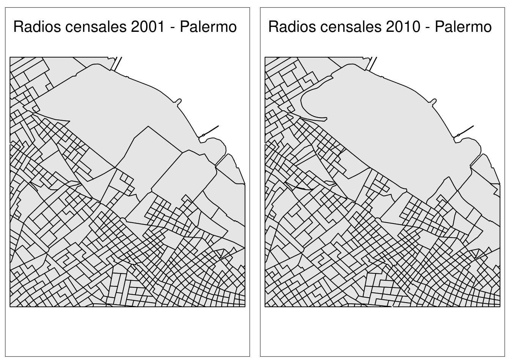

5 Data wrangling de datos espaciales
Al terminar este capítulo ustedes van a poder:
- Reutilizar información entre polígonos solapados que no coinciden en su totalidad
- Georeferenciar direcciones
- Estimar tiempos de transporte entre distintos puntos espaciales5.1 Introduccion
Los datos espaciales tienen muchas características particulares que hacen que su almacenamiento, transformación de datos, herramientas de análisis y de visualización varien con respecto a otros tipos de datos. En el capítulo de introducción a los datos espaciales vimos como leer distintos tipos de archivos, cómo “mezclar” información entre datos solo por la relación espacial entre las entidades (con st_join()) y también hemos realizado algunas visualizaciones con tmap() y ggplot()
El objetivo de este capítulo es introducir a un conjunto de herramientas adicionales que pueden ser de gran importancia para trabajar con cualquier tipo de datos espaciales. En particular, una de ellas busca resolver el clásico problema de tener información sobre áreas que no están perfectamente superpuestas, mientras que otras dos introducen a la posibilidad de georreeferenciar direcciones y de estimar distancia de desplazamientos entre distintos puntos.
Estas herramientas no son exhaustivas, pero sí suelen ser relevantes para poder hacer un mejor uso de los datos espaciales y poder responder preguntas relevantes.
5.2 Areal weighted interpolation
El INDEC realiza censos con un intervalo de aproximadamente 10 años en Argentina. Las últimas dos ediciones al escribir estas lineas fueron en los años 2001 y 2010. Los censos poblacionales son una de las formas más clásicas de conseguir información homogenéa, de alcance nacional sobre las condiciones de vida de toda la población Argentina, tanto urbana y rural, con un nivel de granuralidad bastante aceptable. Todavía más, al hacerse cada cirto período de tiempo, es posible analizar variaciones entre décadas.
La unidad espacial mínima de los censos de Argentina son los radios censales. Comparar la evolución de diversas variables entre censos a ese nivel de desagregación es muy útil para responder muchas interesantes. En este ejercicio vamos a poder analizar cómo cambió la edad promedio de los habitantes de estos radios censales entre 2001 y 2010 en la Ciudad de Buenos Aires. Para hacerlo, vamos a encontrarnos con un problema entre los polígonos de ambos censos. Miren la figura que aparece abajo ¿Son iguales?
Figure 5.1: La proyección MERCATOR distorsiona nuestra percepción de los tamaños
Claramente no: los radios censales cambiaron de forma entre 2001 y 2010. Esto es atendible, ya que estos radios suelen crearse respetando ciertos criterios metodológicos que no priorizan la comparación entre censos. Con todo, sería una pena no poder trabajar con estos datos: vamos a aprender una alternativa para resolver este problema, pero a un costo.
Para hacer comparables los datos entre ambos polígonos, debemos hacer determinados supuestos de cómo se distribuyen los datos hacia adentro de ellos Uno de los supuestos más usuales es asumir que los datos se distribuyen de manera homogénea hacia dento de los polígonos. Esto hace muy fácil poder trabajar con los polígonos mediante lo que se conoce como Interpolación ponderada por peso, o areal weighted interpolation.
5.2.1 Carga de los datos
Lo primero que habría que hacer es cargar los datos. Sin embargo, sabemos que debemos cargar las librerias en nuestra sesión de R para que muchas de las funciones que usamos se ejecuten.
library(tidyverse) # Para manipular datos y graficarlos
library(sf) # Para manipular datos espaciales
library(tmap) # Para graficar datos espacialesUna vez que tengamos cargadas las librerías vamos a descargar los datos desde el repositorio. Podría haber enviado todo en un RData, pero quiero introducirlos a una nueva forma de guardar datos espaciales: geojson. La ventaja más obvia de este tipo de archivos espaciales es que consiste de un solo archivo que contiene todos los datos en listas. No vamos a preocuparnos estrictamente por su forma, pero lo que sí vamos a hacer es leer un geojson porque probablemente sea uno de los archivos con los que eventualmente se encuentren.
datosCenso2001 <- read_sf("https://github.com/datalab-UTDT/GIS2/raw/master/AWI/radiosCensalesCABA2001.geojson")
datosCenso2010 <- read_sf("https://github.com/datalab-UTDT/GIS2/raw/master/AWI/radiosCensalesCABA2010.geojson")Los geojson se leen con la misma función read_sf. Un punto importante a tener en cuenta cuando trabajamos con este formato de datos espaciales es que obliga a que el CRS sea el 4326, es decir el WSG84 sin proyectar. Aunque podríamos seguir trabajando con esta proyección, vamos a transformarlos a la proyección inicial en la cual vinieron. No conocemos el código EPSG, pero sí el proj4string correspondiente: +proj=tmerc +lat_0=-90 +lon_0=-66 +k=1 +x_0=3500000 +y_0=0 +ellps=WGS84 +units=m +no_defs. Con el siguiente código van a tener a los dos objetos en la proyección con la que arrancaron.
datosCenso2001 <- datosCenso2001 %>%
st_transform('+proj=tmerc +lat_0=-90 +lon_0=-66 +k=1 +x_0=3500000 +y_0=0 +ellps=WGS84 +units=m +no_defs"')
datosCenso2010 <- datosCenso2010 %>%
st_transform('+proj=tmerc +lat_0=-90 +lon_0=-66 +k=1 +x_0=3500000 +y_0=0 +ellps=WGS84 +units=m +no_defs"')Si quieren investiguen que variables hay en cada uno de los datos censales con las funciones que ya vimos en clase, tales como str o colnames. Pueden probar una función adicional de tidyverse: glimpse()
## Rows: 3,407
## Columns: 23
## $ COD_2001 <chr> "020100402", "020100305", "020100301", "020100303", "020100307", "020100306…
## $ PROV_ <chr> "02", "02", "02", "02", "02", "02", "02", "02", "02", "02", "02", "02", "02…
## $ DEPTO_ <chr> "010", "010", "010", "010", "010", "010", "010", "010", "010", "010", "010"…
## $ pop <int> 110, 1405, 1162, 762, 591, 738, 752, 481, 1129, 555, 1047, 803, 906, 659, 7…
## $ pop014 <int> 14, 180, 177, 74, 109, 124, 133, 81, 147, 99, 155, 144, 150, 108, 124, 146,…
## $ pop1564 <int> 96, 1049, 757, 528, 366, 532, 473, 297, 768, 336, 681, 503, 650, 436, 506, …
## $ pop64plus <int> 0, 176, 228, 160, 116, 82, 146, 103, 214, 120, 211, 156, 106, 115, 96, 134,…
## $ highSchoolAboveALLPOP <int> 25, 851, 619, 396, 286, 329, 352, 256, 554, 307, 528, 300, 435, 234, 351, 2…
## $ terciarioAboveALLPOP <int> 6, 600, 427, 217, 193, 221, 191, 148, 365, 211, 299, 165, 285, 108, 249, 13…
## $ universitaryAboveALLPOP <int> 2, 354, 248, 118, 123, 135, 81, 77, 190, 108, 150, 82, 159, 46, 136, 66, 91…
## $ highSchoolAbove2564 <int> 10, 704, 477, 310, 204, 284, 274, 194, 451, 224, 419, 250, 383, 192, 279, 2…
## $ terciarioAbove2564 <int> 3, 530, 357, 187, 142, 200, 165, 121, 325, 165, 259, 150, 262, 97, 212, 129…
## $ universitaryAbove2564 <int> 2, 324, 209, 110, 97, 126, 75, 64, 177, 95, 142, 77, 153, 46, 122, 64, 83, …
## $ pop2564 <int> 60, 891, 593, 407, 277, 422, 384, 248, 642, 280, 586, 387, 536, 327, 377, 4…
## $ avgAge <dbl> 28.72727, 36.58434, 40.85714, 43.49213, 41.24196, 36.57182, 40.04255, 41.98…
## $ descuentoJubil <dbl> 0.6333333, 0.8321256, 0.8084291, 0.7699387, 0.7460938, 0.8010899, 0.7523511…
## $ descuentoJubilAsalariado <dbl> 0.8181818, 0.8921933, 0.8626198, 0.8403756, 0.7751938, 0.8604651, 0.8512821…
## $ asalariado <dbl> 0.7333333, 0.6497585, 0.5996169, 0.6533742, 0.5039062, 0.7029973, 0.6112853…
## $ cuentapropia <dbl> 0.2000000, 0.3393720, 0.3888889, 0.3404908, 0.4765625, 0.2833787, 0.3761755…
## $ servDomestico <dbl> 0.1000000, 0.0205314, 0.0287356, 0.0276074, 0.0546875, 0.0299728, 0.0250784…
## $ asalariadoPrivado <dbl> 0.1333333, 0.1086957, 0.1800766, 0.1932515, 0.1757812, 0.1771117, 0.1285266…
## $ ocupadosUniversitariaComp <dbl> 0.0000000, 0.3683575, 0.3639847, 0.3036810, 0.3945312, 0.3024523, 0.2100313…
## $ geometry <MULTIPOLYGON [m]> MULTIPOLYGON (((4192913 615..., MULTIPOLYGON (((4192240 615...…5.2.2 Diferentes radios censales
Como les comenté anteriormente, los radios censales para la Ciudad de Buenos Aires sufrieron importantes cambios en su forma. Pero no hace falta que me crean a mí o a la imagen que puse anteriormente: con R pueden verlo por ustedes mismos. De paso, vamos a introducir una función nueva de sf y algo nuevo sobre cómo hacer múltiples mapas.
Vamos a observar cómo son los radios censales en Palermo para 2001 y para 2010. Para esto lo primero que debemos hacer es hacer “zoom” en Palermo para ambos censos y luego hacer un mapa que los muestre lado a lado. La función st_crop será muy útil para esto. Lo que hace recortar los polígonos en base a las coordenadas más “externas” de un determinado polígono. De esta manera, siempre queda un cuadrado o un rectángulo en general “centrado” con respecto a los datos espaciales que nosotros queremos.
# Palermo tiene el código de departamento número 014
radiosCensalesPalermo2010 <- datosCenso2010[datosCenso2010$DEPTO_ %in% '014',] %>%
st_union() # st_union() junta a todos los polígonos en uno solo
palermo2010 <- st_crop(x = datosCenso2010,
y = radiosCensalesPalermo2010)## Warning: attribute variables are assumed to be spatially constant throughout all geometries## Warning: attribute variables are assumed to be spatially constant throughout all geometries¿Qué significa ese warning attribute variables are assumed to be spatially constant throughout all geometries? Lo que nos avisa es que st_crop cortó algunos polígonos y les asignó el valor de los atributos que tenían cuando los polígonos estaban completos ¿Esto es correcto? Depende de la variable con la que estamos trabajando. Imaginen que la variable nos describe el uso de la tierra. Si el polígono más grande era una zona industrial, un polígono recortado de él también tiene que ser una zona industrial, por lo cual no hay problema. Ahora imaginen que es el la cantidad de personas que viven allí. Es altamente problable que al recortar el polígono no sea correcto asignar la misma cantidad de personas. En este ejemplo particular esto nos tiene sin cuidado, ya que solo queremos quedarnos con la zona de Palermo y no usar sus variables.
Ahora hagamos unos gráficos simples de Palermo en ambos censos con tmaps. Presten atención a la nueva función tm_sf(). Lo que hace es graficar la columna geometry que se encuentra en los datos que le pasamos con tm_shape. De esta manera, imita el tipo de datos que hay y no hace falta aclararle si son puntos o polígonos, por ejemplo. Luego usamos la función tm_layout que nos ayuda para modificar algunas cuestiones relacionadas con el diseño, como el título. Finalmente usamos tmap_arrange al que le podemos pasar gráficos y los acomoda en un mismo panel para mostrarlos de un solo golpe.
mapa2001 <- tm_shape(palermo2001) +
tm_sf(border.col = 'black',col = 'grey90') +
tm_layout(title='Radios censales 2001 - Palermo')
mapa2010 <- tm_shape(palermo2010) +
tm_sf(border.col = 'black',col = 'grey90') +
tm_layout(title='Radios censales 2010 - Palermo')
tmap_arrange(mapa2001, mapa2010)
Antes de analizar los gráficos, un par de puntos a tener en cuenta. Noten que guardé los mapas individualmente en objetos. Esto es realmente útil en algunas cirscunstancias, y no solo para luego ponerlos en un panel. Nos sirve, por ejemplo, para ir agregando capas de a poco a nuestro gráfico e ir guardando las versiones intermedias. En segundo lugar, es importante saber cómo exportar estos gráficos. Es realmente simple con tmap y también con ggplot. En este caso, al estar trabajando con tmap ejecuten lo siguiente:
graficoSalida <- tmap_arrange(mapa2001, mapa2010)
tmap_save(graficoSalida,dpi = 300, filename = 'comparacionradioscensales.png')tmap_save solo requiere del objeto a exportar (en nuestro caso, graficoSalida) y la dirección y nombre donde se guardará (en este caso, lo guardamos en la misma carpeta del proyecto con el nombre ‘comparacionradioscensales.png’). DPI es un parámetro adicional que indica la cantidad de Dots Per Inch (DPI) que queremos que tenga nuestra imagen. 300 DPI es una cantidad elevada para gráficos en la computadora.
Volvamos a los gráficos de los radios censales. Comparen distintos puntos de Palermo y verán que las diferencias son elevadas entre ambos censos. Aun si este cambio en los polígonos no es del todo reparable, podemos comparar la evolución de diferentes variables si estamos dispuestos a tolerar un error basado en la asunción de que las variables se distribuyen uniformemente en el espacio.
5.2.2.1 Breve desvío: haciendo lo mismo con ggplot()
La librería ggplot2 es la más utilizada para hacer gráficos en R. Veamos cómo hacer lo mismo que hicimos en la subsección anterior, pero esta vez usando esta librería. La principal diferencia es que ggplot, para graficar más de un gráfico en un panel, nos pide que los datos estén todos juntos en un mismo data.frame. Esto es lo que se muestra en el capítulo de visualizaciones de este mismo libro.
Sin embargo, no siempre esta es la mejor elección. Muchas veces queremos hacer gráficos con datos que están representados en distintos objetos y esto no debería ser un impedimento para poder armar nuestro panele de graficos. Por suerte, el paquete gridExtra tiene exactamente lo que necesitamos para solucionar este problema. No se olviden de instalar el paquete gridExtra para poder ejecutar lo siguiente:
library(gridExtra)
mapa2001 <- ggplot(palermo2001) +
geom_sf(col = 'black',fill = 'grey90') +
labs(title='Radios censales 2001 - Palermo') +
coord_sf(datum = NA) +
theme_minimal()
mapa2010 <- ggplot(palermo2010) +
geom_sf(col = 'black',fill = 'grey90') +
coord_sf(datum = NA) +
labs(title='Radios censales 2010 - Palermo') +
theme_minimal()
grid.arrange(mapa2001, mapa2010,ncol=2)Muy similar a lo que hicimos con tmap, no? El código incluso se parece bastente, con algunos cambios. coord_sf(datum = NA) lo usamos para que ggplot no nos muestre información sobre el sistemas de coordenadas de referencia (puede ser muy molesto para nuestro gráfico). themee_minimal() saca mucho de los elementos que los gráficos en ggplot tienen por default. Ahora sí, sigamos con lo importante.
5.2.3 Make polygons comparable again
Estamos en condiciones de hacer lo que buscábamos: hacer comparables a los polígonos ¿Qué hace nuestro algoritmo de Areal Weighted Interpolation?
Resumiendo y simplificando un poco, lo que hace es realmente simple: estima el porcentaje de un polígono que se solapa con otro y le asigna de manera proporcional el valor de las variables. Pero hay que tener en cuenta que las variables pueden ser conteos (como población) o porcentajes (como por ejemplo el porcentaje de población con estudios secundarios completos). En el primer caso, el algoritmo debe sumar las distintas partes que forman al polígono, mientras que en el segundo debe ponderar el porcentaje de acuerdo al solapamiento.
En nuestros objetos tenemos ejemplos de ambas variables. Por ejemplo, en ambos casos tenemos el promedio de edad (avgAge), pero también la población de personas menores a 14 años (pop014). Veamos cómo podemos transformar los polígonos de 2001 a los del 2010 para poder observar la distribución de estas dos variables para los dos censos.
El paquete que nos ayudará para lograr este objetivo es areal. Instalenlo si es la primera vez que están trabajando con este paquete. Ya deberían saber como hacerlo: install.packages(‘areal’). Una vez que lo tengan instalado, usen require o library para poder usar la función aw_interpolate.
La función pide algunos parámetros. En primer lugar, source pide el objeto cuya información espacial queremos cambiar, en este caso los datos del censo 2001. Luego, nos pide el sid, que no es otra cosa que un conjunto de identificadores únicos para cada uno de los datos de nuestra source. Luego, en .data nos pide el target, es decir la forma que van a tomar nuestros datos espaciales, en nuestro ejemplo los radios censales de 2010, y también nos pide los ids (identificadores) correspondientes en tid. Luego, nos pide como quiere que ponderemos los nuevos polígonos con el parámetro weight, en nuestro caso queremos que sume (sum) proporcionalmente cada uno de los polígonos que contribuirán con el polígono de 2010. El parámetro output nos indica si queremos que nos devuelva un objeto sf con la columna de geometry incluida, o simplemente un data frame, elegimos ‘sf’. Finalmente, debemos indicar las variables intensivas o extensivas de los datos de origen. Las primeras hacen referencia a las variables que son porcentajes, mientras que las segundas hacen referencia a variables que son simplemente conteos. Nosotros tenemos una variable de cada una: pop014 es conteo mientras que avgAge es una variable extensiva.
library(areal)
nuevosDatos <- aw_interpolate(source=datosCenso2001, sid = COD_2001,
.data=datosCenso2010, tid = COD_2010,
weight="sum", output = "sf",
extensive = 'pop014',
intensive = 'avgAge')## Error in aw_interpolate(source = datosCenso2001, sid = COD_2001, .data = datosCenso2010, : Data validation failed. Use ar_validate with verbose = TRUE to identify concerns.¡No funcionó! Veamos por qué no funcionó usando la función ar_validate() que hace un chequeo de si la interpolación puede funcionar o no entre dos objetos
ar_validate(source = datosCenso2001,
target = datosCenso2010,
varList = c('pop014','avgAge'),
verbose = TRUE)## # A tibble: 6 x 2
## test result
## <chr> <lgl>
## 1 sf Objects TRUE
## 2 CRS Match TRUE
## 3 CRS is Planar TRUE
## 4 Variables Exist in Source TRUE
## 5 No Variable Conflicts in Target FALSE
## 6 Overall Evaluation FALSELa función chequea 5 condiciones necesarias para que la interpolación funcione y nos indica si se cumple o no. En la primera se pregunta si ambos objetos son sf, la segunda si los sistema de coordenadas de referencia son iguales, la tercera si se encuentran proyectados, la cuarta nos indica si las variables que queremos convertir existen en el objeto de origen (source) y la quinta si no existen conflictos con el nombre de las variables en el objeto de destino. La sexta, overall evaluation, solo nos dice si todas se cumplen o no.
En nuestro caso nos indica que hay algún conflicto en el objeto de destino. Lo que sucede es que las variables se llaman igual en el objeto de origen y destino, por lo que debemos cambiar los nombres de las columnas para que funcione aw_interpolate. Para esto, debemos usar la función colnames y paste0:
colnames(datosCenso2001)[colnames(datosCenso2001) %in% c('pop014','avgAge')] <-
paste0(c('pop014','avgAge'),'_2001')
colnames(datosCenso2001)## [1] "COD_2001" "PROV_" "DEPTO_"
## [4] "pop" "pop014_2001" "pop1564"
## [7] "pop64plus" "highSchoolAboveALLPOP" "terciarioAboveALLPOP"
## [10] "universitaryAboveALLPOP" "highSchoolAbove2564" "terciarioAbove2564"
## [13] "universitaryAbove2564" "pop2564" "avgAge_2001"
## [16] "descuentoJubil" "descuentoJubilAsalariado" "asalariado"
## [19] "cuentapropia" "servDomestico" "asalariadoPrivado"
## [22] "ocupadosUniversitariaComp" "geometry"Ya sabemos que la función colnames() nos devuelve los nombres de las columnas de un data frame. Luego, elegimos aquellas columnas que tienen nombre de ‘pop014’ y ‘avgAge’. Finalmente, le asignamos lo que devuelve paste0(). Lo que hace es concatenar cadenas de texto, en este caso pop014 con _2001 y avgAge con _2001. Chequeen nuevamente los nombres de las columnas y verán que están cambiados. Ahora sí podemos correr nuestro código
nuevosDatos <- aw_interpolate(source=datosCenso2001, sid = COD_2001,
.data=datosCenso2010, tid = COD_2010,
weight="sum", output = "sf",
extensive = 'pop014_2001',
intensive = 'avgAge_2001')
colnames(nuevosDatos)## [1] "COD_2010" "PROV_" "DEPTO_"
## [4] "pop" "pop014" "pop1564"
## [7] "pop64plus" "highSchoolAboveALLPOP" "terciarioAboveALLPOP"
## [10] "universitaryAboveALLPOP" "highSchoolAbove2564" "terciarioAbove2564"
## [13] "universitaryAbove2564" "pop2564" "avgAge"
## [16] "ocupadosUniversitariaComp" "geometry" "pop014_2001"
## [19] "avgAge_2001"5.3 Haciendo mapas de nuestros nuevos datos
Aprovechemos la nueva información que tenemos para poder hacer mapas. Usando ggplot2, grafiquemos la edad promedio en 2001, 2010 y la variación entre ambos censos.
Lo primero que tenemos que hacer en ggplot, para que la leyenda represente correctamente los colores de nuestro mapa, es juntar todo en un mismo dataset que sea largo. Recuerden que esto es lo necesario para trabajar con paneles y facet_wrap().
Seleccionamos las dos y usamos pivot_longer()
nuevosDatosLonger <- nuevosDatos %>% select(avgAge, avgAge_2001) %>% pivot_longer(names_to = "Year", values_to = "AvgAge",
cols = c("avgAge", "avgAge_2001")) %>% st_as_sf()## Warning in val_cols[col_id] <- unname(as.list(data[cols])): number of items to replace is not a multiple of
## replacement lengthselect() y pivot_longer() no deberían traer demasiados problemas. Ahora bien, fijense que luego de hacer esto, usamos st_as_sf(), que como vimos en el capítulo de datos espaciales define a un data.frame como un objeto espacial sf. Esto no debería pasar, pero cuando usan pivot_longer, el data.frame deja de ser sf, pero como no pierde la columna de geometry, rápidamente podemos volver a convertirlo en un objeto sf. El mensaje que reciben es un error de cuando se usa pivot_longer. Queda resuelto cuando usamos st_as_sf() luego.
Si quisieran, ya podrían hacer el gráfico, pero no sería el que ustedes quisieran guardar para compartir. Vamos a hacer algunos cambios, y de paso aprender un poco más sobre los factores en R. Para que facet_wrap() ponga en el lado izquierdo a 2001 y en el derecho a 2010, debemos convertir la variable Year a factor en el orden que queremos.
nuevosDatosLonger <- nuevosDatosLonger %>%
mutate(Year=factor(Year,levels = c("avgAge_2001","avgAge"),labels = c(2001,2010)))Lo que hicimos es decirle a R que 1) queremos que la columna R se convierta a factor, 2) que los valores que tiene esa variable son “avgAge_2001” y “avgAge” y 3) que queremos los represente como “2001” y 2010, respectivamente. Internamente, R va a hacer que Year sea un vector numérico, con 1 represenetando a “2001” y 2 a “2010”, aunque todo el tiempo podemos trabajarlo como si fuera un vector de character. Esto es lo que logran los factores.
## [1] 2010 2001 2010 2001 2010 2001
## Levels: 2001 2010## [1] 2 1 2 1 2 1Muy bien, ahora vamos a mejorar nuestro gráfico y, en lugar de hacerlo continuo, vamos a hacerlo discreto, haciendo que cada color represente el 25% de nuestros datos, lo que se conoce como cuartiles. Para discretizar un vector continuo, lo que tenemos que usar es cut(). Solo nos pide el vector y los puntos de quiebre. Estos puntos de quiebre no son otra cosa que un vector con estos valores. Veamos qué hace la funcion quantile()
## 0% 25% 50% 75% 100%
## 20.17079 38.02628 39.80790 41.38003 52.92446De manera predeterminada, nos devuelvee los puntos de corte de los cuartiles, nada mal. El na.rm=TRUE es tan solo para que no tome en cuenta un valor NA que hay ene AvgAge, con el que lidiamos más adelante. Con estos datos podemos discretizar nuestra variable.
nuevosDatosLonger <- nuevosDatosLonger %>%
mutate(AvgAge=cut(AvgAge,breaks = quantile(AvgAge,na.rm = TRUE)))Perfecto, veamos qué es lo que hizo usando table()
##
## (20.2,38] (38,39.8] (39.8,41.4] (41.4,52.9]
## 1776 1776 1776 1776Lo hizo muy bien, pero esos intervalos los entendería solo una matemática. Podemos cambiarlos por algo mucho más interpretable:
Por último, eliminamos los NAs que había en nuestra variable de edad
Finalmente, podemos hacer nuestro gráfico. Si no comprenden totalmente el código, revisen el capítulo de visualizaciones.
5.4 Ejercicio
La variable ocupadosUniversitariaComp indica la proporción de ocupados con estudios universitarios completos como el total de ocupados para cada uno de los radios censales en 2001 y 2010. Hagan un mapa usando ggplot que muestre a los datos de 2001 y 2010 en formato de polígonos 2010 en la Ciudad de Buenos Aire ¿Qué patrones encuentran?